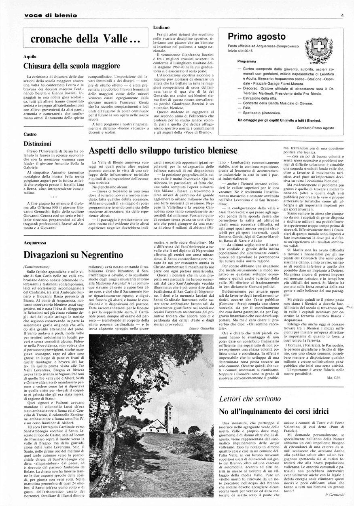
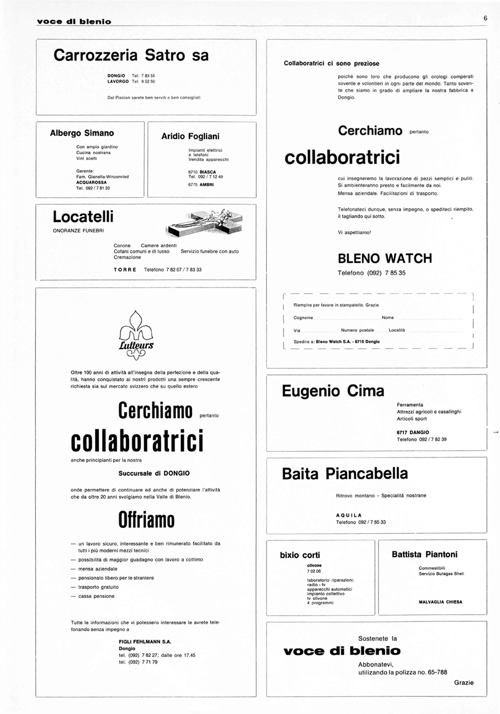
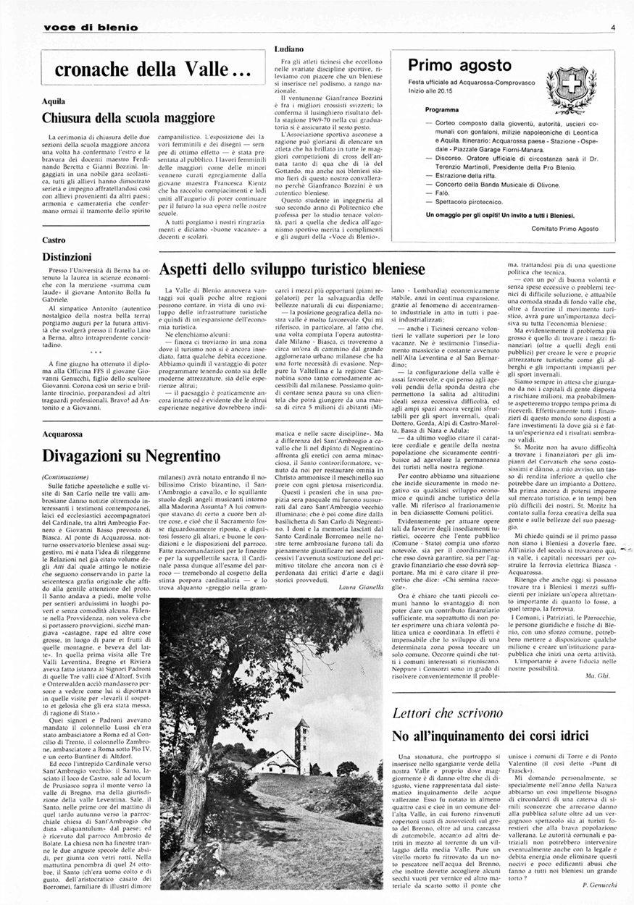
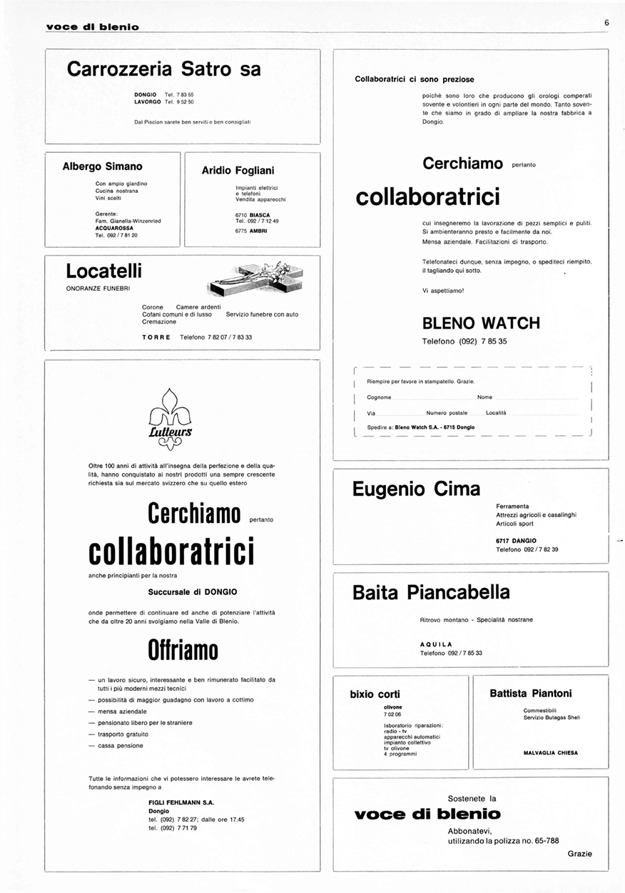
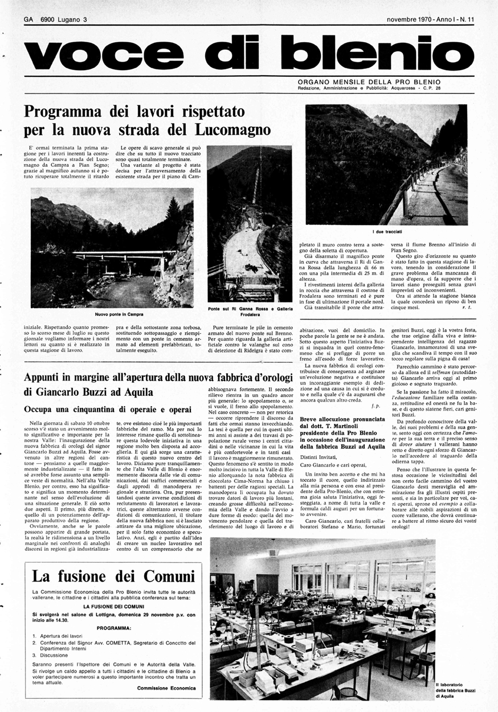
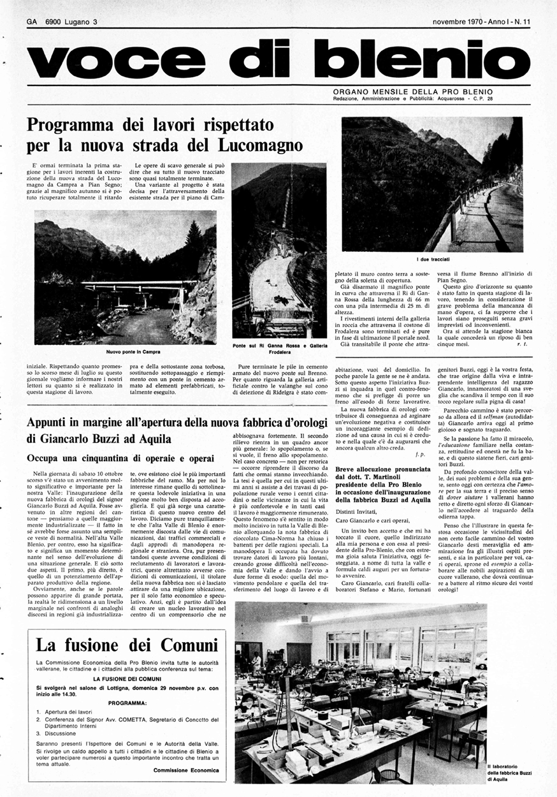

Vanzetta Gabriele
Voice of Blenio
The Voice of Blenio project relates the niche newspaper of this north valley in Ticino (CH) with the most contemporary interaction technologies,like the machine learning. The web page integrates the first 12 issues of the monthly magazine, from January 1970. The interactions are based on the user’s position and ability to speak the valley dialect, good luck.
Object
Disassembled object


 



 



WEB PLATFORM
Initially, the newspaper overview is presented. The arrangement and size of the pages varies depending on the distance of the user's face from the screen. Later if I move closer I can enter a single page view. To change pages I have to speak in dialect and use the commands 'innanz' to go forward and 'indree' to go back (or the presence of wrists inside the camera). In overview mode I can change the order of the pages (shuffle) by moving my browser screen.
ZOOM IN/OUT
exemple sketch with ML5, that recognises our body and the various joints.
The zoom is controlled by the distance of the user's face from the screen. For this interaction I used machine learning (poseNet), which allows me to calculate the distance between the user's nose and eye and consequently his distance from the screen.
SHUFFLE
coordinates browser screen position
demo shuffle
NEXT/PREV, MACHINE LEARNING (failed)
teacheable machine audio; "innanz", "indree". "innanz" è diventato "avant" per distinguerlo maggiormente dall'altra parola. In the end, unfortunately, i did not use the model because, p5 doesn't support two classifications (audio and images). Thanks anyway Giulia and Giorgio it was fun.
NEXT/PREV, SPEECH RECOGNITION JS (discreetly failed)
speechRecognition is a function of JS that allows you to access the PC's microphone and analyse what is being said. Not a very workable alternative, audio recognition at this level is still very unstable and incorrect.

JS's interpretations of the Ticino dialect and more.
NEXT/PREV, ML5 poseNet (that works)
In conclusion, I decided to make the next and prev experience smoother and less frustrating. By means of the presence of the user's wrist inside the camera you can continue (right wrist) or go back (left wrist) within the pages. Just don't put your wrist in front your nose, otherwise you will exit from the single page view. Speech recognition is still active, the more tenacious can still train their dialect.